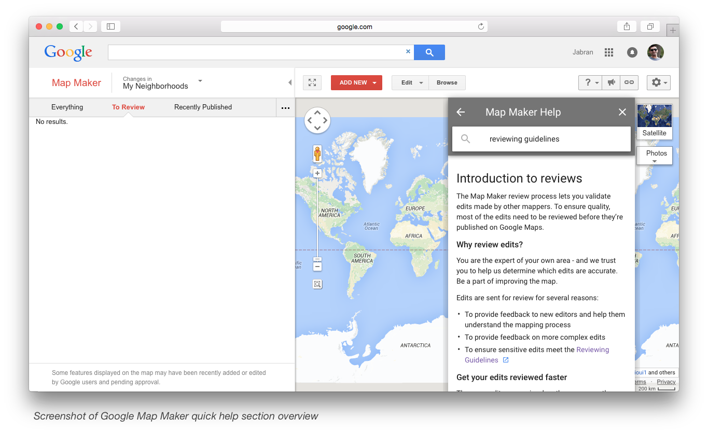
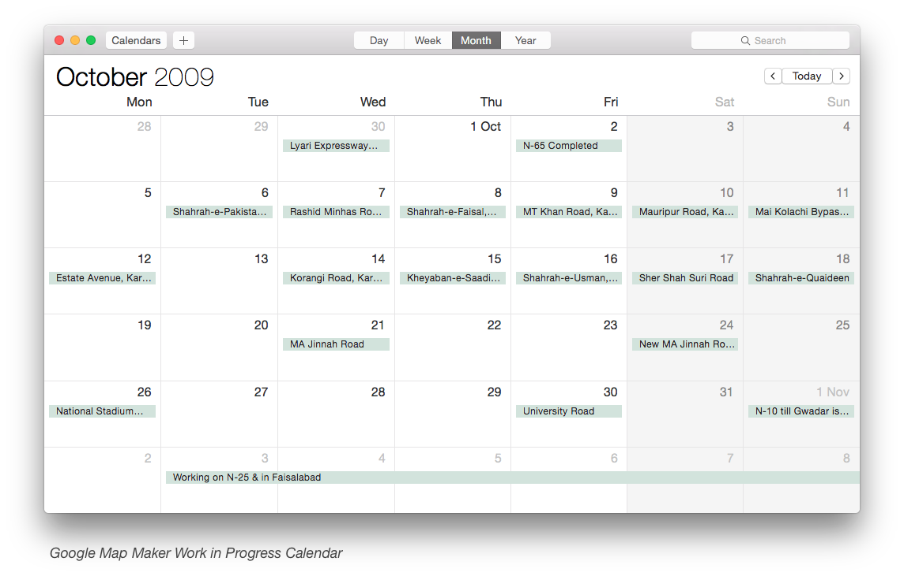

Google Map Maker Regional Leads
Google Map Maker is back, well partially. It is still not available for editing in all countries and lots of features are limited. Especially a crucial feature of polygon editing is not available yet. Few other noticeable features such as naming an intersection and transit categories are also not available. I also noticed that a generic category of "Point of Interest" is also vanished from list of categories. However, there are now more choices in reviewing an edit and for some perhaps a bit confusing too but nevetheless, there is now quick access to help topics and more understandable and easily accessible reviewing guidelines. Another thing to notice is that some edits that are complex or bigger than a certain limit go into a special review status where it requires a review by Google and others are unable to act including Leads.
Roles are little bit shuffled with recent comeback. Advocates are also back with revised role and title as Regional Leads. The Regional Lead role – though still a voluntary role like Advocates – has following benefits over regular mappers:
- Edits go live faster and in many cases immediately
- Ability to make decisions on edits submitted by others
- Direct access to the Google Map Maker team through a private forum
- Experiment with and feedback on new features of Map Maker before their public release
Although it is completely optional for Leads to announce about their designation but it would make more sense to do so and will help their local community to know where they need to reach out for regional issues. Currently known Leads for Pakistan (including me) are following:
- Abdul Rahman – Map Maker Profile
- Faraz Ahmad – Map Maker Profile
- Hukam Saeed – Map Maker Profile
- Jabran Rafique – Map Maker Profile
- Nasir Aleri – Map Maker Profile
- Omer Sheikh – Map Maker Profile
If you are one and would like to be listed here as well then please let me know in comments below or at this Facebook post.
Talking about regular mappers of Pakistan in general, priorities are to map the unmapped areas of the country including major parts of Sindh, Balochistan and Tribal Areas, especially. Other than general mapping, it is obvious to help each other in reviewing the edits and correction of outdated features. For regional review requests, I would suggest to post links in existing Google+ Community and Facebook Group because of their proactive and engaging communities. For more general topics and queries, I suggest you post in product forum where Google Map Maker team and community members can answer those better.
A long time ago, some of us used to setup teams and map an area collectively and then move to another. If that approach works any good for you then please do so. Normally, mappers would try to avoid the area that is being massively mapped either by an individual or a team. Although that is only to avoid the editing conflicts but if you think your intervention would make the map better then do so but please respect others' hard work.
If you are reviewing the edits, be considerate. Like you, others have also put a lot of hard work in and expect it to be treated equally and positively. Keep their moral high by giving them tips instead of cold comments. This helps grow our community and speed up the mapping efforts. Changing or adding wrong information, personal information, claiming some personal space or just adding fun edits to feed the ego does not help anyone at all. After all this all work is to help each other at a wider level by providing a better platform to use.
One last thing that we still lack of female mappers from Pakistan. There may be some or many mapping anonymously but since they have never come forward so we would never know. I consider them a great asset in terms of providing more detailed local information for their regions and helping others. I would encourage you all to spread the word and encourage females in your circle to join in too. In the end, please don't hesitate to discuss things. Discussion is great and it gives everyone a chance to offer their viewpoint—be they regular mappers or Leads.
Happy cartography!